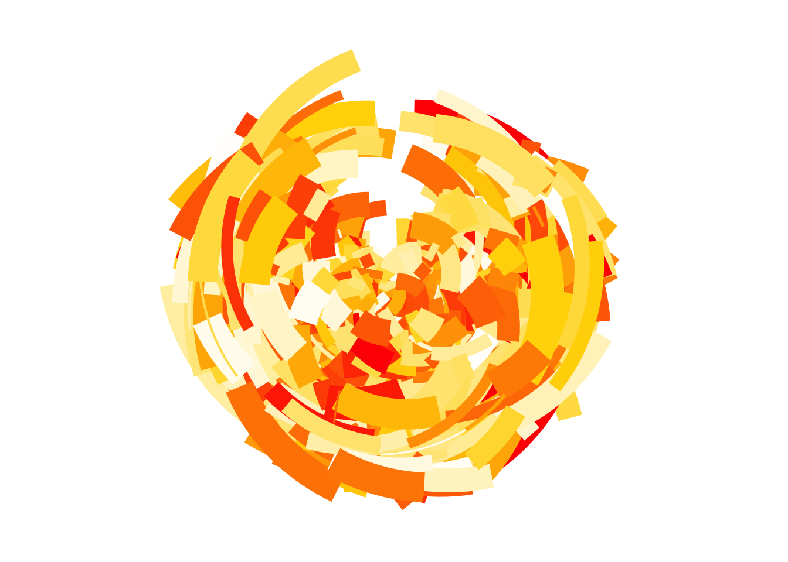
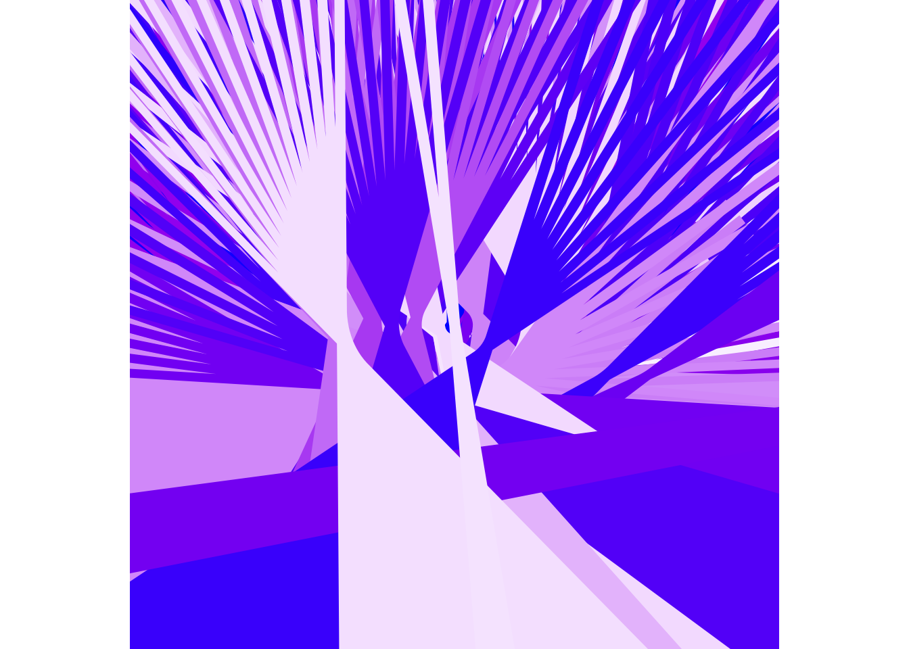

polar_art <-function(seed, n, palette) {# set the state of the random number generatorset.seed(seed)# data frame containing random values for # aesthetics we might want to use in the art dat <-tibble(x0 =runif(n),y0 =runif(n),x1 = x0 +runif(n, min =-.2, max = .2),y1 = y0 +runif(n, min =-.2, max = .2),shade =runif(n), size =runif(n) )# plot segments in various colours, using # polar coordinates and a gradient palette dat |>ggplot(aes(x = x0,y = y0,xend = x1,yend = y1,colour = shade,size = size )) +geom_segment(show.legend =FALSE) +coord_polar() +scale_y_continuous(expand =c(0, 0)) +scale_x_continuous(expand =c(0, 0)) +scale_colour_gradientn(colours = palette) +scale_size(range =c(0, 10)) +theme_void()}
Polar art piece 1
polar_art(seed =100, # creates a new piecen =1000, # number of segments used in piecepalette =c("red", "gold", "white") # color of piece)
Warning: Using `size` aesthetic for lines was deprecated in ggplot2 3.4.0.
ℹ Please use `linewidth` instead.

Polar art piece 2
polar_art <-function(seed, n, palette) {# set the state of the random number generatorset.seed(seed)# data frame containing random values for # aesthetics we might want to use in the art dat <-tibble(x0 =runif(n),y0 =runif(n),x1 = x0 +runif(n, min =-10, max =10),y1 = y0 +runif(n, min =-10, max =10),shade =runif(n), size =runif(n) )# plot segments in various colours, using # polar coordinates and a gradient palette dat |>ggplot(aes(x = x0,y = y0,xend = x1,yend = y1,colour = shade,size = size )) +geom_segment(show.legend =FALSE) +coord_polar() +scale_y_continuous(expand =c(0, 1)) +scale_x_continuous(expand =c(1, 0)) +scale_colour_gradientn(colours = palette) +scale_size(range =c(0, 1000)) +theme_void()}polar_art(seed =40, # creates a new piecen =500, # number of segments used in piecepalette =c("blue", "purple", "white") # color of piece)

Colour Exercise
Polar art set up
polar_art <-function(seed, n, palette) {# set the state of the random number generatorset.seed(seed)# data frame containing random values for # aesthetics we might want to use in the art dat <-tibble(x0 =runif(n),y0 =runif(n),x1 = x0 +runif(n, min =-.2, max = .2),y1 = y0 +runif(n, min =-.2, max = .2),shade =runif(n), size =runif(n) )# plot segments in various colours, using # polar coordinates and a gradient palette dat |>ggplot(aes(x = x0,y = y0,xend = x1,yend = y1,colour = shade,size = size )) +geom_segment(show.legend =FALSE) +coord_polar() +scale_y_continuous(expand =c(0, 0)) +scale_x_continuous(expand =c(0, 0)) +scale_colour_gradientn(colours = palette) +scale_size(range =c(0, 10)) +theme_void()}